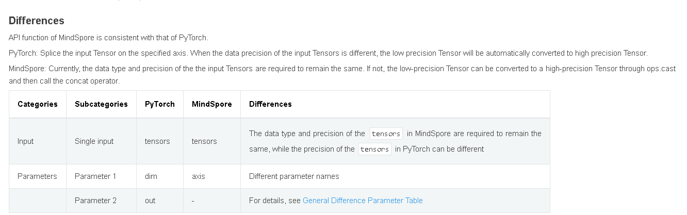

Application Practice Guide for Network Migration Tool

Overview
This guide describes how to apply various migration-related tools to improve the efficiency of the migration process when migrating neural networks from other machine learning frameworks to MindSpore, with a focus on describing how to tightly integrate the migration tools with the migration process.
Examples of Network Migration Tool Applications
This chapter uses a network (Vision Transformer) as an example of completing a network migration and describes how various tools are applied during the critical migration process.
Note: The complete sample code for migrating the network can be found at the following link
Network Migration Development
The API scanning function of MindSpore Dev Toolkit scans the mapping between APIs in PyTorch network and MindSpore APIs. The API scanning function scans the mapping between the APIs in PyTorch network and MindSpore APIs, and opens the “Description” URL for API differences, which gives a detailed analysis of the APIs and helps users to quickly build the network code for MindSpore.

For example, the torch.cat interface:
The following API differences can be seen in the “Description” URL (PyTorch and MindSpore API Mapping Table).

According to the rule, refer to the following PyTorch code:
x = torch.cat((cls_token, x), dim=1) # [B, 197, 768]
The MindSpore code is as follows:
x = mindspore.ops.cat((cls_token, x), axis=1) # [B, 197, 768]
Initial Verification of Network Structure
After the initial network migration is constructed, we can first perform some basic comparisons of the network structure to verify that the migrated network structure is correct. You can use the following two ways to compare the network structure respectively:
Step 1: Obtain PyTorch ViT network structure and weight parameters (pth)
Call the ts.migrator.save_net_and_weight_params interface will save the network object to a file (the same as printing the contents of a model object with print, where model is an nn.Module object) and will save the weight parameters to a pth file as well as to a mapping file (to be used for weight comparison with MindSpore).
def net_pt_vit(args):
device = torch.device(args.device if torch.cuda.is_available() else "cpu")
model = create_model(num_classes=args.num_classes, has_logits=False).to(device)
ts.migrator.save_net_and_weight_params(model, path="/mindspore_model/vit/v1/temp_data/pt_net_info/")
The following file can be found under the configured path.
-rw-r--r-- 1 root root 8709 Jul 5 20:36 torch_net_architecture.txt （Network structure information, the same as printing the contents of a model object with python print）
-rw-r--r-- 1 root root 7737 Jul 5 20:36 torch_net_map.json (parameter mapping file for weight comparison with MindSpore)
-rw-r--r-- 1 root root 343261393 Jul 5 20:36 torch_troubleshooter_create.pth (weight parameters)
Step 2: Obtain MindSpore ViT network structure and weight parameters (ckpt)
Call the ts.migrator.save_net_and_weight_params interface. You can save the network object to a file (the same as printing the contents of the model object with print, where model is a Cell object), and will save the weight parameters to a ckpt file.
def net_ms_vit(args):
model = create_model(num_classes=args.num_classes, has_logits=False)
ts.migrator.save_net_and_weight_params(model, path="/mindspore_model/vit/v1/temp_data/ms_net_info/")
The following file can be found under the configured path.
-r-------- 1 root root 343217199 Jul 5 20:26 mindspore_troubleshooter_create.ckpt (weight parameters)
-rw-r--r-- 1 root root 14013 Jul 5 20:26 mindspore_net_architecture.txt （Network structure information, the same as printing the contents of a model object with python print）

Step 3: Compare the network infrastructure through net_architecture.txt
Tools such as Beyond Compare can be used to quickly compare the network structure (i.e., mindspore_net_architecture.txt vs. torch_net_architecture.txt), and the following can be used to preliminarily determine that the network structure hierarchies are basically aligned, and that there are a number of natural API as well as parameter differences, for example: Dense and Linear are in the normal range.

Step 4: Further compare the network structure by comparing the weight parameters
Using the files we saved in steps 1 and 2, the weight parameter structure comparison of pth and ckpt can be accomplished through TroubleShooter ts.migrator.compare_pth_and_ckpt interface, to further verify that the network structure is correct.
# weight_map_path is the parameter mapping file exported in step 1, compare_value=False means it only compares the quantity and shape information, not the parameter value.
ts.migrator.compare_pth_and_ckpt(
weight_map_path="/mindspore_model/vit/v1/temp_data/pt_net_info/torch_net_map.json",
pt_file_path="/mindspore_model/vit/v1/temp_data/pt_net_info/torch_troubleshooter_create.pth",
ms_file_path="/mindspore_model/vit/v1/temp_data/ms_net_info/mindspore_troubleshooter_create.ckpt",
compare_value=False)

Network Forward Result Verification
After the migrated MindSpore network can be executed normally, the network forward result verification can be performed, which is done by comparing the PyTorch and MindSpore network forward results. Two different verification schemes are provided here, one is semi-automatic verification scheme and the other is fully-automatic verification scheme. We will introduce the two schemes applicable scenarios and usage methods respectively.
Three Basic Conditions for Network Comparison
Note: This is only a brief description. For detailed steps see the example of the semi-automatic Verification scheme.
There are three conditions that need to be met before PyTorch and MindSpore network comparison can be performed:
Randomness fixed and identical
You can use ts.migrator.fix_random in PyTorch and MindSpore to fix randomness, for example:
ts.widget.fix_random(16)
Consistent input data sample
Refer to the following two steps, which can be used to save and load the same data samples (included: both data and labels can be used in this method).
Step 1: Use ts.save to save a particular data sample of the PyTorch network as npy, and ts.save will be automatically numbered as
0_images.npyts.save("/mindspore_model/vit/v1/temp_data/pt/npy/images.npy", images)
Step 2: Then use
np.loadto load this data into PyTorch Tenosr and MindSpore Tensor, respectivelyimages = torch.tensor(np.load('/mindspore_model/vit/v1/pytorch_org/vision_transformer/0_images.npy')) images = mindspore.Tensor(np.load('/mindspore_model/vit/v1/pytorch_org/vision_transformer/0_images.npy'))
Consistent initialization weight parameters
Generally we will take the weights of the PyTorch network as a benchmark, convert them to MindSpore weights and load them to achieve a uniform initialization of the weight parameters. Refer to the following two steps:
Step 1: Save PyTorch network weights and conversion mappings for loading in MindSpore.
Use the ts.migrator.save_net_and_weight_params interface to save PyTorch network weights and transformation mappings. For example:
ts.migrator.save_net_and_weight_params(model, path="/mindspore_model/vit/v1/temp_data/pt_net_info/")
Step 2: Convert and load weights in the MindSpore network.
Use ts.migrator.convert_weight_and_load interface to convert PyTorch weights and load them into MindSpore network. For example:
ts.migrator.convert_weight_and_load(weight_map_path="/mindspore_model/vit/v1/temp_data/pt_net_info/torch_net_map.json", pt_file_path="/mindspore_model/vit/v1/temp_data/pt_net_info/torch_troubleshooter_create.pth",net=model)
Semi-automatic Verification Scheme
Based on meeting the three preconditions for comparison, the semi-automatic verification scheme completes the verification of forwrd results by manually specifying the data to be saved and performing batch comparison. The advantage of the semi-automatic scheme is the strong applicability of the scenario, and the disadvantage is that it requires more manual operations.
Step 1: Execute PyTorch network and obtain forward results
def run_pt_net(args):
# 1) Fix randomness, call ts.widget.fix_random interface to fix randomness in PyTorch
ts.widget.fix_random(16)
device = torch.device(args.device if torch.cuda.is_available() else "cpu")
model = create_model(num_classes=args.num_classes, has_logits=False).to(device)
# 2) Load samples of the same data (samples can be kept in a .npy format with numpy.save while the PyTorch network is executed.)
images = torch.tensor(np.load('/mindspore_model/vit/v1/pytorch_org/vision_transformer/0_images.npy'))
# 3) Save weights and conversion mapping for loading in MindSpore
ts.migrator.save_net_and_weight_params(model, path="/mindspore_model/vit/v1/temp_data/pt_net_info/")
# 4) Execute the network and save the forward results, and use the ts.save interface to save the network execution results
pred = model(images.to(device))
ts.save("/mindspore_model/vit/v1/temp_data/pt/npy/pred.npy", pred)
Step 2: Execute the MindSpore network to obtain forward results
def run_ms_net(args):
# 1) Fix randomness, same as step 1, call the same interface ts.widget.fix_random(16)
ts.widget.fix_random(16)
# 2) Load the same data samples
images = mindspore.Tensor(np.load('/mindspore_model/vit/v1/pytorch_org/vision_transformer/0_images.npy'))
model = create_model(num_classes=args.num_classes, has_logits=False)
# 3) Load weights output by pt to ensure consistent initialization weight parameters
# Call the ts.migrator.convert_weight_and_load interface to convert PyTorch weight parameters to MindSpore weight parameters and load them into the MindSpore network
ts.migrator.convert_weight_and_load(weight_map_path="/mindspore_model/vit/v1/temp_data/pt_net_info/torch_net_map.json",
pt_file_path="/mindspore_model/vit/v1/temp_data/pt_net_info/torch_troubleshooter_create.pth",
net=model)
# 4) Execute the network and save the forward results
pred = model(images)
ts.save("/mindspore_model/vit/v1/temp_data/ms/npy/pred.npy", pred)
Step 3: Make comparisons and view comparison results
Use the ts.migrator.compare_npy_dir interface for forward result comparison.
# 5) Compare the forward output results of PyTorch and MindSpore, and call the ts.migrator.compare_npy_dir interface to complete the comparison of the saved forward results
ts.migrator.compare_npy_dir('/mindspore_model/vit/v1/temp_data/pt/npy',
'/mindspore_model/vit/v1/temp_data/ms/npy')
The following comparison results can be seen, the forward network results are all properly aligned by allclose and cosine similarity comparisons, which proves that the results are identical.
The orig dir: /mnt/sdb2/mindspore_model/vit/v1/temp_data/pt/npy
The target dir: /mnt/sdb2/mindspore_model/vit/v1/temp_data/ms/npy

Fully-automatic Verification Scheme
Fully-automatic verification scheme is suitable for verification of inference network or network forward results and other migration scenarios. The difference from semi-automatic verification scheme is that the tool is used to automatically complete a variety of pre-comparison condition alignment, and the user only needs to pass in the network object. Compared to the semi-automatic scheme, it is more simple, basically can be realized with one-click comparison, but some complex scenarios the use of which may be limited. For example: the PyTorch network and the MindSpore network are not convenient to run on the same machine. For scenarios that cannot be supported by the fully-automatic verification scheme, please refer to the section on semi-automatic verification scheme.
Step 1: Import PyTorch model objects to complete network forward automatic comparison
def auto_run_ms_net(args):
# 1) Import pytoch script path and import pytroch model for creating PyTorch model objects
import sys
sys.path.insert(0, "/mindspore_model/vit/v1/pytorch_org")
from pytorch_org.vision_transformer.vit_model import vit_base_patch16_224_in21k as create_pt_model
# 2) Create MindSpore model object and PyTorch model object, respectively, for passing in the auto-comparison interface
model = create_model(num_classes=args.num_classes, has_logits=False)
pt_model = create_pt_model(num_classes=args.num_classes, has_logits=False)
# 3) Create a forward automatic comparison object and perform the comparison
diff_finder = ts.migrator.NetDifferenceFinder(pt_net=pt_model,
ms_net=model)
# auto_inputs parameter to automatically generate data samples according to shape, compare will automatically align weights, fixed randomness.
diff_finder.compare(auto_inputs=(((8, 3, 224,224), np.float32),))
Step 2: View comparison results
After the interface is run, it prints some logs of the execution process, and finally prints the comparison results of the network forward output.

Note: When the results are inconsistent, the API output of each layer in the network can be exported dichotomously or layer-by-layer via the ts.save interface and batch comparison is performed via the ts.migrator.compare_npy_dir interface to localize to the API where the problem was introduced.
Network Loss Result Verification
The verification scheme for loss, similar to the semi-automatic verification scheme for forward results, is based on satisfying the three preconditions for comparison by manually specifying the loss to be saved and saving them using the ts.save interface, and using ts.migrator.compare_npy_dir for batch comparison to complete the verification of the loss results. For the specific steps, refer to the semi-automatic verification scheme of the forward results.
Backward Result Verification (with Comparison of Gradient, Weight Parameters)
The idea of the comparison verification scheme of the gradient is also similar to that of the semi-automatic verification scheme of the forward result, but the invocation is slightly different. Refer to the following step for operation.
Step 1: Save the output of each stage of PyTorch network training
Similar to the semi-automatic verification scheme for forward results, we can use the ts.save interface for saving key data at various stages of training, for example: forward outputs, losses, grads, and weight parameters. Refer to the example below, explaining each key data saving.
def train_one_step(args):
# 1) Fix randomness
ts.widget.fix_random(16)
# 2) The process of creating a training network
device = torch.device(args.device if torch.cuda.is_available() else "cpu")
model = create_model(num_classes=args.num_classes, has_logits=False).to(device)
loss_function = torch.nn.CrossEntropyLoss()
pg = [p for p in model.parameters() if p.requires_grad]
optimizer = optim.SGD(pg, lr=args.lr, momentum=0.9, weight_decay=5E-5)
model.train()
optimizer.zero_grad()
# 3) Unify data samples and labels
images = torch.tensor(np.load('/mindspore_model/vit/v1/'
'pytorch_org/vision_transformer/1_None.npy'))
labels = torch.tensor(np.load('/mindspore_model/vit/v1/'
'pytorch_org/vision_transformer/0_None.npy'))
# 4) Save weights and conversion mappings for loading in MindSpore
ts.migrator.save_net_and_weight_params(model, path="/mindspore_model/vit/v1/temp_data/pt_net_info/")
# 5) Implement the training process
pred = model(images.to(device))
loss = loss_function(pred, labels.to(device))
loss.backward()
# 6) Preserve the gradient
# The ts.widget.get_pt_grads interface encapsulates PyTorch method for saving grads, which can be called directly and saved using ts.save.
# Because the gradient is a Tensor list, ts.save will save the gradient in multiple files and automatically number them. It is recommended to create a separate directory to save the gradient list
ts.save("/mindspore_model/vit/v1/temp_data/pt/grads/grads.npy", ts.widget.get_pt_grads(model))
optimizer.step()
# 7) Save the weight parameter pth, set the weight_params_filename name, do not use the default value to avoid overwriting the initialized weights
ts.migrator.save_net_and_weight_params(model, path="/mindspore_model/vit/v1/temp_data/pt_net_info/",
weight_params_filename='result_pt.pth')
Step 2: Save the output of each stage of MindSpore network training
def train_one_step_ms(args):
# 1) Fix randomness
ts.widget.fix_random(16)
# 2) The process of creating a training network
model = create_model(num_classes=args.num_classes, has_logits=False)
optimizer = mindspore.nn.SGD(model.trainable_params(), learning_rate=args.lr, momentum=0.9, weight_decay=5E-5)
loss_function = mindspore.nn.CrossEntropyLoss()
def forward_fn(data, label):
logits = model(data)
loss = loss_function(logits, label)
return loss, logits
grad_fn = mindspore.value_and_grad(forward_fn, None, optimizer.parameters, has_aux=True)
# 3) Load weights output by pt to ensure consistent initialization weight parameters
# Call the ts.migrator.convert_weight_and_load interface to convert PyTorch weight parameters to MindSpore weight parameters and load them into the MindSpore network
ts.migrator.convert_weight_and_load(weight_map_path="/mindspore_model/vit/v1/temp_data/pt_net_info/torch_net_map.json",
pt_file_path="/mindspore_model/vit/v1/temp_data/pt_net_info/torch_troubleshooter_create.pth",
net=model)
# 4) Load the same data samples and labels as in PT
data = mindspore.Tensor(np.load('/mindspore_model/vit/v1/pytorch_org/vision_transformer/1_None.npy'))
label = mindspore.Tensor(np.load('/mindspore_model/vit/v1/pytorch_org/vision_transformer/0_None.npy'))
# 5) Implement the training process
(loss, pred), grads = grad_fn(data, label.astype(mstype.int32))
# 6) Save the gradient
ts.save("/mindspore_model/vit/v1/temp_data/ms/grads/grads.npy", grads)
optimizer(grads)
# 7) Save the weight parameter pth
mindspore.save_checkpoint(model,"/mindspore_model/vit/v1/temp_data/ms/ms_result.ckpt")
Step 3: Compare the gradients
Use the ts.migrator.compare_grads_dir interface for gradient comparison.
ts.migrator.compare_grads_dir('/mindspore_model/vit/v1/temp_data/pt/grads',
'/mindspore_model/vit/v1/temp_data/ms/grads')
The orig dir: /mindspore_model/vit/v1/temp_data/pt/grads
The target dir: /mindspore_model/vit/v1/temp_data/ms/grads

Step 4: Compare weighting parameters
Use the ts.migrator.compare_pth_and_ckpt interface for weight parameter comparison.
ts.migrator.compare_pth_and_ckpt(weight_map_path="/mindspore_model/vit/v1/temp_data/pt_net_info/torch_net_map.json",
pt_file_path="/mindspore_model/vit/v1/temp_data/pt_net_info/result_pt.pth",
ms_file_path="/mindspore_model/vit/v1/temp_data/ms/ms_result.ckpt")
Obtain the comparison result to the weight parameter shape.

Obtain the comparison result to the weight parameter value.

Note: If the comparison results are inconsistent, you can go backward to see if the gradients are consistent. If the gradients are consistent, you can check if the optimizer is used correctly, and you can refer to the section on Network Layer-by-Layer Difference Check for a layer-by-layer problem delimitation and exclusion.
Others
Network Layer-by-Layer Difference Check
When we need to locate the cause of the problem when comparing the network forward results or loss inconsistencies, we can take a dichotomous or layer-by-layer approach to save the API output and perform a data comparison to identify the point where the differences are introduced. This comparison also needs to fulfill the three basic conditions of comparison.
Step 1: Save the API output of PyTorch network part
In the network, use ts.save to save the output of the API for checking network differences introduction points.
Note: ts.save supports saving Tensor (including mindspore.Tensor and torch.tensor), and list/tuple/dict composed by Tensor. When it is list/tuple, the number will be added sequentially, while when it is dict, the key will be added in the filename. Please refer to troubleshooter.save for details.
class Mlp(nn.Module):
"""
MLP as used in Vision Transformer, MLP-Mixer and related networks
"""
def __init__(self, in_features, hidden_features=None, out_features=None, act_layer=nn.GELU, drop=0.):
super().__init__()
out_features = out_features or in_features
hidden_features = hidden_features or in_features
self.fc1 = nn.Linear(in_features, hidden_features)
self.act = act_layer()
self.fc2 = nn.Linear(hidden_features, out_features)
self.drop = nn.Dropout(drop)
def forward(self, x):
x = self.fc1(x)
# Save self.fc1, that is output of nn.Linear
ts.save('/mindspore_model/vit/v1/temp_data/pt/npy/fc1.npy', x)
x = self.act(x)
x = self.drop(x)
x = self.fc2(x)
# Save self.fc2, that is output of nn.Linear
ts.save('/mindspore_model/vit/v1/temp_data/pt/npy/fc2.npy', x)
x = self.drop(x)
return x
Step 1: Save the API output of MindSpore network part
In the network, use ts.save to save the output of the API for checking network differences introduction points.
class Mlp(nn.Cell):
def __init__(self, in_features, hidden_features=None, out_features=None, act_layer=nn.GELU, drop=0.):
super().__init__()
out_features = out_features or in_features
hidden_features = hidden_features or in_features
self.fc1 = nn.Dense(in_features, hidden_features)
#self.act = act_layer(approximate=False)
self.act = nn.GELU(approximate=False)
self.fc2 = nn.Dense(hidden_features, out_features)
self.drop = nn.Dropout(p=drop)
def construct(self, x):
x = self.fc1(x)
# Save self.fc1, that is output of nn.Dense
ts.save('/mindspore_model/vit/v1/temp_data/ms/npy/fc1.npy', x)
x = self.act(x)
x = self.drop(x)
x = self.fc2(x)
# Save self.fc2, that is output of nn.Dense
ts.save('/mindspore_model/vit/v1/temp_data/ms/npy/fc2.npy', x)
x = self.drop(x)
return x
Step 3: Compare API outputs to find differences
Use the ts.migrator.compare_npy_dir interface to compare the data saved in each layer, and the results can be used to determine where differences have been introduced for problem localization.
ts.migrator.compare_npy_dir('/mindspore_model/vit/v1/temp_data/pt/npy',
'/mindspore_model/vit/v1/temp_data/ms/npy')

Network Weight Migration
In scenarios such as migrating inference networks or fine-tuning network training, it is often necessary to migrate weights from PyTroch to MindSpore. At this time, you can use TroubleShooter weight migration tool, first call ts.migrator.get_weight_map to obtain the weight mapping file, then call ts.migrator.convert_weight to complete the weight auto-migration. The following is the basic sample. For the complex scenarios that require customization, refer to TroubleShooter pth to ckpt weights auto conversion.
import troubleshooter as ts
device = torch.device(args.device if torch.cuda.is_available() else "cpu")
model = create_model(num_classes=args.num_classes, has_logits=False).to(device)
# 1) Obtain the weight mapping file
ts.migrator.get_weight_map(model, weight_map_save_path="/mindspore_model/vit/v1/temp_data/pt_net_info/torch_net_map.json")
# 2) Weight conversion
ts.migrator.convert_weight(weight_map_path="/mindspore_model/vit/v1/temp_data/pt_net_info/torch_net_map.json",
pt_file_path="/torch_model/vit/v1/torch_net.pth",
ms_file_save_path='/mindspore_model/vit/v1/ms_net.ckpt')